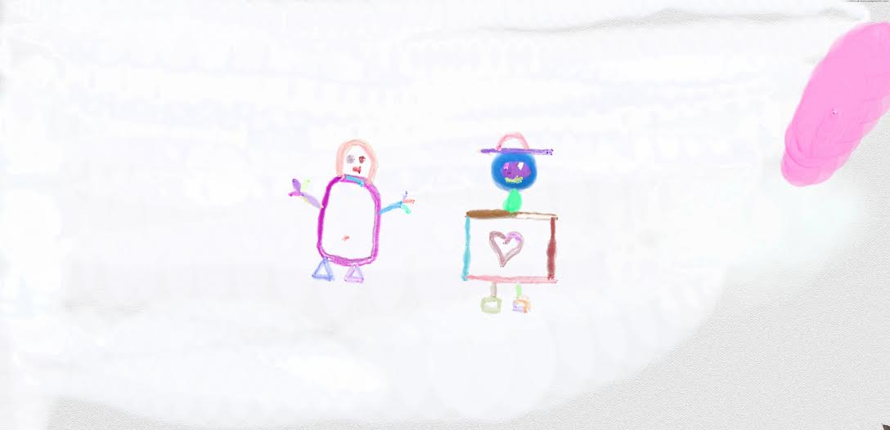
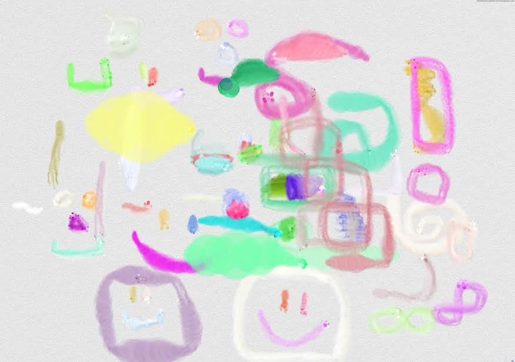
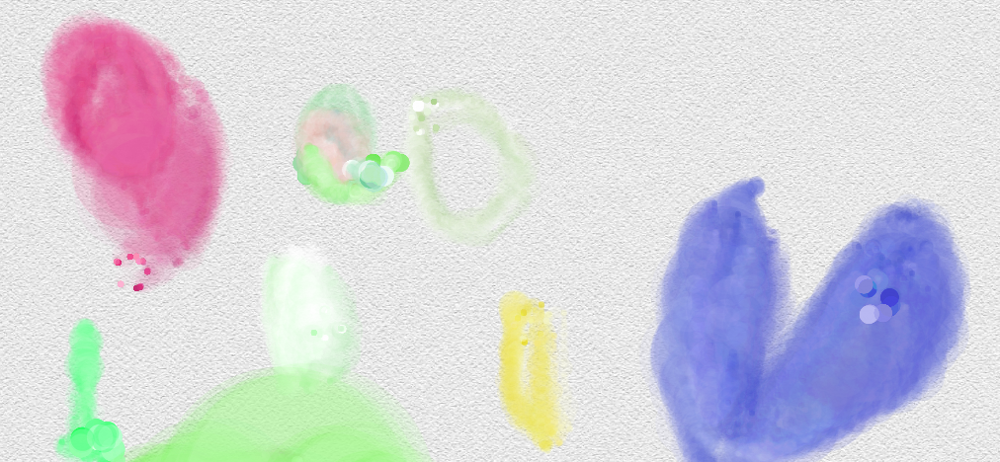
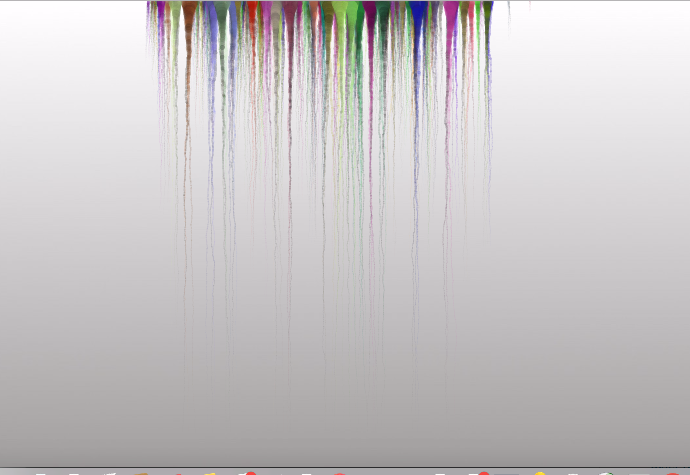

Drip Drip (2017)
Creative Coding, Internet Art
p5.js, HTML5 Canvas, socket.io
An attempt to simulate the effects of watercolor (water seeping into paper) that can be painted with the mouse. The simulation of water is a challenging topic usually studied in computer graphics. Our attempt here uses a variety of creative coding tricks to "fake" the aesthetic and visual effecs of the paint to simulate watercolour.

Watercolor is modeled by having time as a function of how much "ink" is left in each paint stroke.

Each paint stroke is alpha-layered with between eight to ten other paint strokes which were either lighter or darker in color on the same monochromatic palette.

In p5.js, we can draw strokes as "lines" with varying stroke weight, color, and opacity.

These strokes are very short in length (the distance between the previous and current position of the mouse) which contribute to the gradient and dynamic feel of each paint stroke, consisting of many small lines.

Based on time, each paint stroke has decreasing opacity and stroke weight applied. Finally, the layered paintstrokes are additevely blended together and a small degree of randomness and noise is applied to each stroke prevent the strokes (and blending) to be on top of each other.